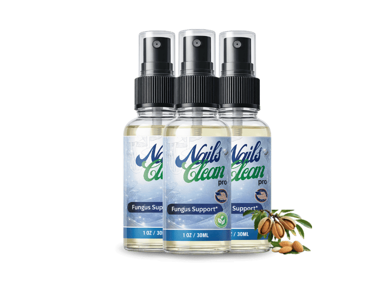
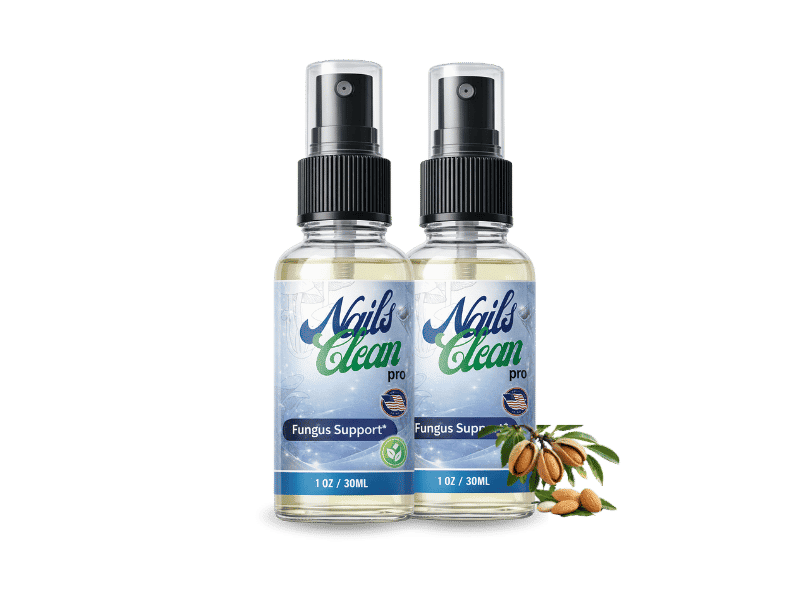
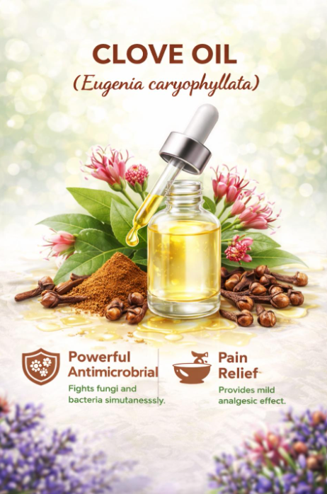
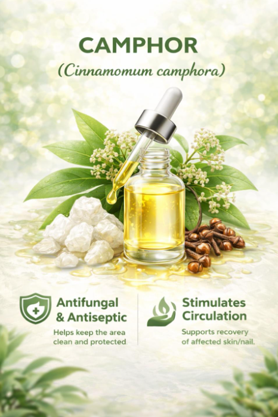

Daily Nail & Skin Support
Clearer Nails. Smoother Skin. One Simple Daily Habit.
NailsCleanPro is a daily capsule formulated with biotin, zinc, marine collagen peptides, and plant-derived antioxidants to help support the natural clarity and strength of your nails and the smoothness of your skin — from the inside out.
NailsCleanPro is a targeted topical nail-care formula featuring undecylenic acid, clove oil, camphor, and lavender oil—designed to fit easily into your everyday personal-care routine.
- GMP-Certified Facility
- Non-GMO Formula
- 60-Day Guarantee


Product Overview
A Focused Formula, Built Around Two Goals
NailsCleanPro was formulated with a narrow, deliberate focus: give your nails and skin the everyday nutritional building blocks they're commonly missing. Instead of a long list of trendy extras, every capsule centers on ingredients most associated with nail keratin structure and skin support — biotin, zinc, marine collagen peptides, and vitamin E.
NailsCleanPro combines four featured ingredients — undecylenic acid, clove oil, camphor, and lavender oil — in a convenient topical spray designed to complement your everyday nail-care routine.
One Capsule Daily
Simple, no complicated routine to remember.
Non-GMO & GMP Facility
Manufactured under quality-controlled conditions.
The Basics
What Is NailsCleanPro, Exactly?
NailsCleanPro is a daily dietary supplement, not a topical cream or nail polish. It's designed to work from within, supporting the nutritional foundation your body draws on to build nail keratin and maintain healthy-looking skin.
Not a Quick Fix
Nails grow slowly — usually just a few millimeters a month. NailsCleanPro isn't marketed as an overnight fix; it's built for people who are willing to stay consistent for a few months and let biology do its work.
Not a Topical Product
There's no polish, no soak, no cream involved. NailsCleanPro is taken orally, once daily, so there's nothing to apply, reapply, or wipe off.
Made for Daily Life
One capsule fits into a normal morning routine — no shakes to blend, no strict schedule, no special diet required alongside it.
The Mechanism
How Does NailsCleanPro Work?
Nails and skin are both built largely from keratin and collagen-related proteins. When your daily intake of the raw materials for those proteins runs low, nails can become more prone to looking brittle or ridged, and skin can look less smooth. NailsCleanPro is formulated to help close that nutritional gap.
NailsCleanPro combines four featured ingredients in a convenient topical spray. Applied directly to clean, dry nails as directed, the formula is designed to complement regular nail hygiene and support cleaner, healthier-looking nails over time.
Daily Capsule
You take one capsule with water, ideally with a meal.
Nutrient Delivery
Biotin, zinc, and collagen peptides are absorbed through normal digestion.
Cellular Support
These nutrients support the processes your body already uses to build keratin and skin structure.
Consistency Over Time
With regular use over weeks, new nail and skin growth reflects that added support.
Why People Try It
What NailsCleanPro Is Formulated to Support
Results vary from person to person, and NailsCleanPro works best alongside a balanced diet and basic nail care. Here's what the formula is designed to support:
Nail Strength Support
Biotin and zinc are commonly associated with supporting keratin infrastructure in nails.
Smoother-Looking Skin
Marine collagen peptides and vitamin E are included to support skin's natural texture.
Reduced Look of Brittleness
Formulated to support nails that are less prone to appearing dry or flaky over time.
Simple Daily Routine
One capsule a day — nothing complicated to track or apply.
Antioxidant Support
Plant-derived antioxidants are included to help support the body's normal defenses against everyday oxidative stress.
Non-GMO Formula
Made without genetically modified ingredients, in a GMP facility.
These statements describe what the formula's ingredients are commonly associated with supporting. Individual results vary, and NailsCleanPro is not intended to diagnose, treat, cure, or prevent any disease. See our Medical Disclaimer for details.
Inside Every Capsule
The NailsCleanPro Ingredient List
Four core ingredients, each chosen for a specific, well-documented role in nail and skin nutrition. No proprietary blends hiding actual amounts.
Undecylenic Acid
A commonly used topical ingredient in nail-care and antifungal formulations. It is included to help maintain a clean nail environment and support the appearance of healthier-looking nails. Undecylenic acid is also listed as the active ingredient in some FDA-listed OTC topical antifungal products.

Clove Oil
Clove oil contains naturally occurring compounds such as eugenol that have been studied for antimicrobial and antifungal activity. In a nail-care formula, it can complement the overall cleansing and conditioning approach.

Camphor
Camphor is traditionally used in topical formulations and is known for its characteristic cooling sensation. It can contribute to the sensory and skin-care experience of a topical nail formula.
Lavender Oil
Lavender oil is commonly used in topical personal-care products for its aromatic and skin-conditioning properties. Laboratory research has also investigated its activity against certain fungal organisms.
Full ingredient list and exact quantities per serving are printed on the product label. Always check the label for allergen information before use.
The Research Behind The Ingredients
What the Science Says About These Nutrients
We won't cite invented studies or claim NailsCleanPro itself has been clinically trialed — it hasn't. What we can point to is the broader, publicly available nutrition research behind the individual ingredients it contains.
Biotin & Keratin
Biotin is a recognized cofactor in fatty acid synthesis and is commonly discussed in nutrition literature in relation to hair and nail keratin infrastructure, particularly in people with a documented biotin deficiency.
Zinc & Protein Synthesis
Zinc is an essential trace mineral with a well-established role in normal protein and DNA synthesis, both relevant to nail and skin cell turnover.
Collagen Peptides & Skin
Collagen peptide supplementation has been an active area of nutrition research in relation to skin elasticity and hydration in adults.
This section summarizes general nutrition science publicly associated with these ingredient categories. It is not a claim that NailsCleanPro has been independently clinically tested, and it should not be read as medical advice. Speak with a healthcare provider about your individual needs.
What People Are Saying
Illustrative Customer Experiences
The quotes below are illustrative examples of the kind of feedback customers commonly share, written to reflect real usage patterns. Replace with your own verified, consented customer reviews before publishing.
"I liked that it was just one capsule a day — easy to stick with. After a couple of months my nails felt less flaky than before."
— Example customer, illustrative review
"Simple routine, no weird taste, and shipping was quick. I'm continuing on the 3-bottle plan."
— Example customer, illustrative review
Reviews shown here are illustrative examples for demonstration purposes, not verified customer statements. Individual results vary. Replace with real, consented reviews and update the AggregateRating schema with accurate figures before this site goes live.
Package Options
Choose Your NailsCleanPro Supply
Most customers find that 3 to 6 months of consistent use lines up best with how nails actually grow — which is why multi-bottle packs carry the deepest per-bottle savings.
Prices shown are sample figures for template purposes — update with your real, current pricing before publishing. As an affiliate/independent site we may earn a commission on qualifying purchases. See our Affiliate Disclosure.
Try It Without Risk
100% Satisfaction, 60-Day Money-Back Guarantee
We know committing to a new daily habit is easier when there's a safety net. If NailsCleanPro isn't the right fit for you, reach out within 60 days of your purchase date and request a refund under the terms on our Refund Policy page.
That’s why your purchase is backed by a 60-Day Money-Back Guarantee. You have a full 60 days from your purchase date to decide whether NailsCleanPro is right for you. If you're not satisfied with your purchase, simply contact customer support and request a refund according to the terms of the refund policy.
Your purchase is protected by the 60-Day Money-Back Guarantee, so you can make your decision with greater peace of mind.
Start Risk-FreeUsage Guide
How To Use NailsCleanPro
Take One Capsule Daily
With a glass of water, ideally alongside a meal for comfortable digestion.
Stay Consistent
Set a daily reminder — consistency matters more than timing of day.
Give It Time
Track changes over 8–12 weeks, since nail growth is naturally slow.
Do not exceed the recommended dose on the label. Consult your doctor before use if you are pregnant, nursing, under 18, or taking medication.
Who NailsCleanPro Is Designed For
- Adults who want a simple daily nail & skin support routine
- People who prefer a single capsule over multi-step routines
- Anyone whose diet may fall short on biotin, zinc, or collagen
- People comfortable waiting several weeks for gradual change
Who Should Check With a Doctor First
- Pregnant or nursing individuals
- Anyone with a diagnosed medical condition
- Anyone currently taking prescription medication
- Anyone with a known shellfish allergy (due to marine collagen)
Advantages
Why Some Customers Choose NailsCleanPro
Simple Formula
Four core ingredients, transparently listed.
Easy Routine
One capsule, once a day.
Non-GMO
Formulated without genetically modified ingredients.
Guarantee Included
60-day window to request a refund.
Honest Considerations
A Few Things To Know Before You Order
Results Take Time
Because nails grow slowly, this isn't a same-week fix.
Sold Online Only
Currently available only through the official website.
Contains Marine Collagen
Not suitable for those with a shellfish/marine allergy.
Availability
Where To Buy NailsCleanPro?
To avoid counterfeit or expired stock, NailsCleanPro is sold exclusively through the official website. We are an independent affiliate site and link out to the official checkout page below.
Visit Official WebsiteShipping Information
Orders are typically processed within 1–2 business days. Domestic delivery generally takes 5–7 business days; international delivery windows vary by destination and customs processing. Full details are on our Shipping Policy page.
Ordering Process
Select a package above, complete checkout on the official secure order page, and you'll receive an email confirmation with tracking information once your order ships.
Common Questions
Frequently Asked Questions
Ready To Give Your Nails & Skin Daily Support?
NailsCleanPro isn't a miracle overnight fix — it's a straightforward, single-capsule daily habit built on ingredients that have a real, documented role in nail and skin nutrition. If you're ready to be consistent for a few months and see where it takes you, your next step is just below.
Choose Your Package NowThese statements have not been evaluated by the Food and Drug Administration. This product is not intended to diagnose, treat, cure, or prevent any disease. Read our full Medical Disclaimer.